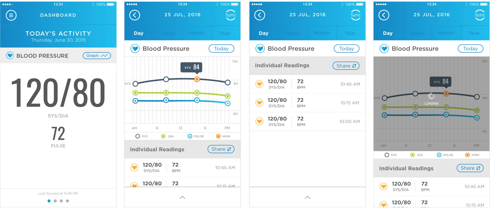
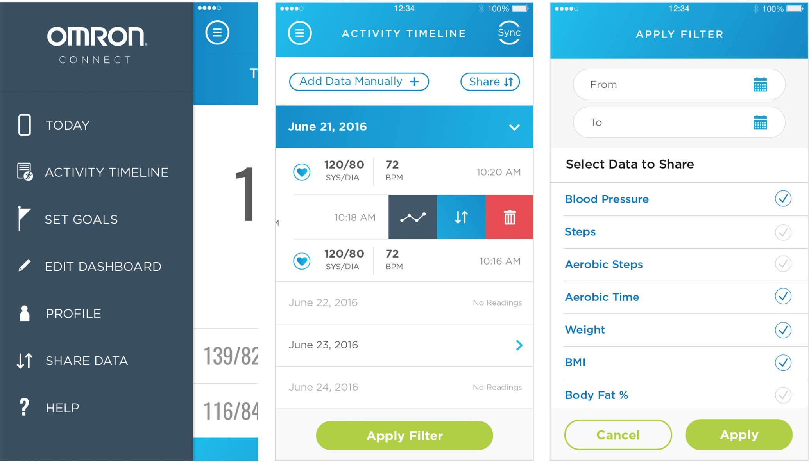
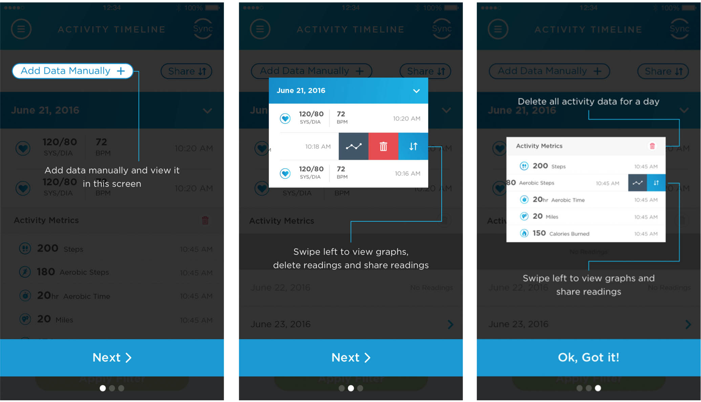
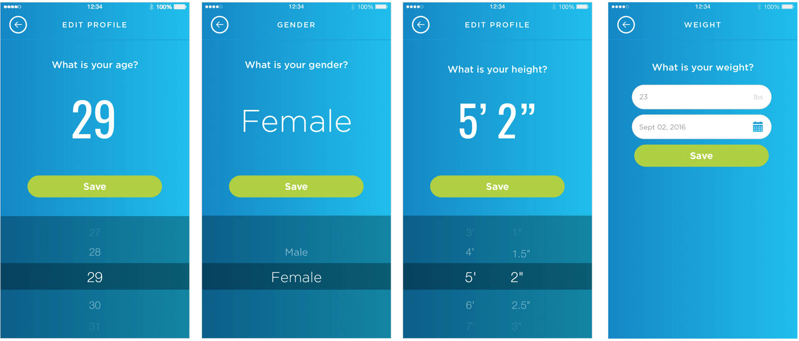

Statement of Originality & Confidentiality
To comply with my non-disclosure agreement, I have omitted and obscured confidential information in this case study. All the below information belongs to the organization whose name appears on the document and is to be treated as confidential. It is used to demonstrate my work experience and related skills. Permission has been granted for the product to be used as documentation of my work. Please do not disclose any information to any person or persons who would use it for the purpose outside the possibility of employment.
OVERVIEW
Omron is an electronics company based in Kyoto, Japan. QBurst Experience Team was approached to design the newly added features to existing Health care mobile application.
CHALLENGE
Since they had an already existing application with a great UI, adding new features directly into the UI was challenging
MY ROLE
I led the Visual Design team to find a solution of the client needs. The project is currently in its development phase.

Blood Pressure monitor graphs (requirment was to add a graph to the existing pressure monitor screen)

Activity Timeline (requirment was to add option to view graph, share, and delete an activity.)

Activity Timeline Tutorial (requirment was to add a walkthrough screens of the new features added)

Edit Profile (requirment was to add profile edit screens)
REFLECTION AND NEXT STEP
Had given more time, a prototype could have been developed. Based on this, user testing could have been done to know the reactions of the users on the newly added features.